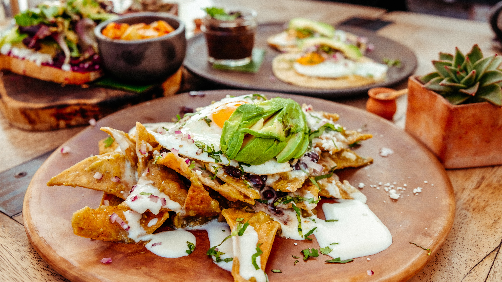
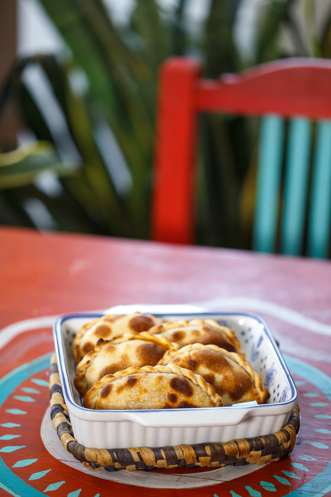
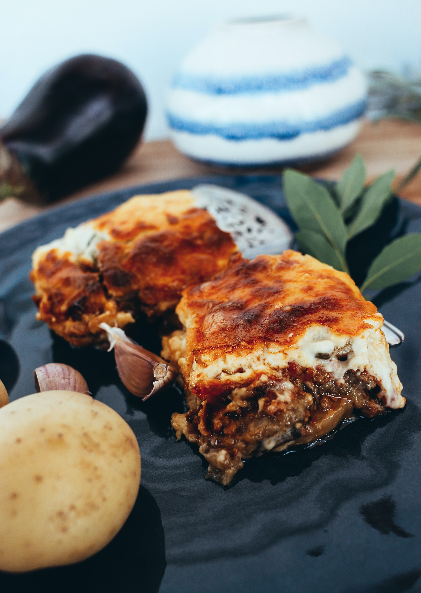

RESTAURANTE
MESA DEL SABOR
BIENVENIDO A LA PAGINA DEL EQUIPO 4 "MESA DEL SABOR "
| MENU RESTAURNTE EQUIPO4 | |
|---|---|
| DESCRIPCION DE LA COMIDA | IMAGEN COMIDA |
| pasta alfredo: pasta, queso, salsa alfredo, pollo, acompañado con 3 rebanadas de pan integral |  |
| papa fritas preparada: papas freidas en aceite acompañado de queso chedar,carne asada y limon |  |
| chilaquiles: tortilla freida acompañada con pollo, salsa roja o verde al gusto, aguacate , queso y crema |  |
| empanadas: empanadas de carne, piña o cajeta |  |
| Cordon blue: pechuga de pollo empanizada y rellena de jamón y queso, acompañada de ensalada |  |
| lasaña: laminas de pasta con salasa de tomate , carne, acelgas y queso |  |